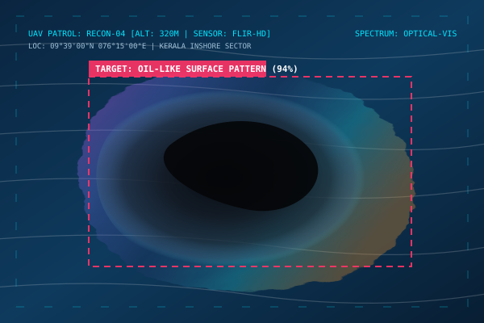
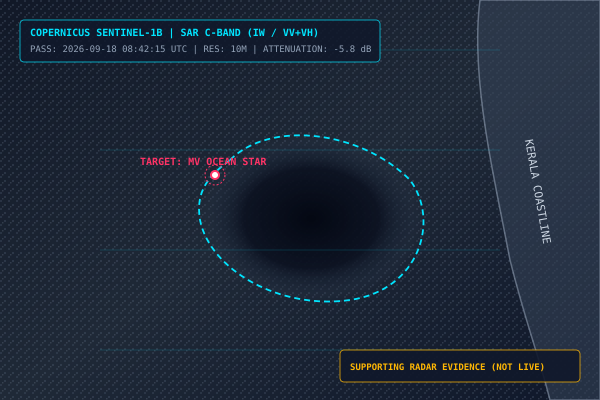

OILGUARD AI OPERATIONAL
Kerala Coastal Watch · Decision-Support Platform
VESSEL MONITORING & TRAJECTORY TRACKING
Monitored fleet within the Kerala coastal sector. Powered by simulated AIS / VTS feed.
| VESSEL NAME | MMSI | TYPE | SPEED | HEADING | COORDINATES | STATUS | RISK LEVEL |
|---|
Engine parameters operating within standard verified operational envelopes.
INCIDENT COMMAND & VERIFICATION CENTRE
Manage active marine pollution reports, multi-source alerts, and verification workflows.
OCEAN VISION AI — COMPUTER VISION SURFACE ANALYSIS
Analyze aerial, drone, and shipboard surveillance imagery for oil-like surface patterns.
SURVEILLANCE IMAGERY FEED

DRAG & DROP SURVEILLANCE IMAGE HERE
or click to browse local drone/patrol image fileAI DETECTION & SPECTRAL METRICS
EXTRACTED SPECTRAL FEATURES
Detected visual characteristics are consistent with an oil-like surface pattern. Capillary wave suppression and dark attenuation observed. Human verification is required.
SENTINEL-1 SAR SATELLITE SUPPORTING EVIDENCE
Remote sensing radar observations from Copernicus Sentinel-1 Synthetic Aperture Radar (SAR).
LATEST AVAILABLE SENTINEL-1 SAR OBSERVATION

RADAR METRICS & OBSERVATION CONTEXT
Hydrocarbons dampen short sea-surface capillary waves, resulting in reduced radar backscatter and characteristic dark-patch signatures. The detected damping aligns with the recorded position of MV Ocean Star.
"Satellite observation is not continuous live monitoring. It is used as a supporting verification source when an observation is available."
PROTOTYPE SPILL TRAJECTORY SIMULATION
Simplified wind-current drift modeling (NOW → +1H → +3H → +6H). Clearly labeled prototype simulation.
TIME HORIZON SELECTOR
| TIME STEP | HOURS | AREA (KM²) | SLICK LENGTH | PROJECTED LOCATION | POTENTIAL EXPOSURE |
|---|---|---|---|---|---|
| NOW | 0H | 0.65 km² | 1.2 km | 09°39'N, 076°15'E | Outer Fairway Channel |
| +1H | 1H | 4.80 km² | 3.2 km | 09°40'N, 076°17'E | Inshore Fishing Grounds Margin |
| +3H | 3H | 18.20 km² | 6.4 km | 09°43'N, 076°19'E | Fishing Zone A & Port Channel |
| +6H | 6H | 52.60 km² | 10.8 km | 09°47'N, 076°24'E | Chellanam Coastal Shoreline |
COASTAL & SENSITIVE ZONE IMPACT ANALYSIS
Evaluation of potential exposure across fishing zones, commercial ports, communities and marine reserves.
Fishing Zone A (Inshore Artisanal Waters)
Primary coastal fishing grounds sustaining over 12,000 traditional fishermen across Chellanam and Kochi.
Coastal Communities (Chellanam & Fort Kochi)
Densely populated coastal villages, seawalls prone to surge wash, and heritage tourist beaches.
Cochin Port Approaches & Fairway
Major international commercial navigation approaches, pilotage fairway, and oil terminal outer anchorage.
Sensitive Marine Zone (Vembanad Mangrove Buffer)
Ramsar wetland site #1212, mangrove fish nursery, and estuarine inlet vulnerable to tidal influx.
SIMULATED AUTHORITY ALERT SYSTEM
Simulated broadcast alert dispatched to maritime response coordinators and port authorities.
POSSIBLE OIL SPILL DETECTED
Multi-source correlation flagged a high-confidence anomaly off the Kochi coastal anchorage.
INCIDENT HISTORY & VERIFICATION LOG
Auditable log of previous marine incident assessments, false alarm resolutions, and investigations.
| INCIDENT ID | VESSEL | TITLE / CONDITION | RISK | STATUS | DATE (UTC) | ACTION |
|---|
JUDGE DEFENSE PANEL & REGULATORY CONTEXT
Direct technical answers to key hackathon questions and MARPOL Annex I compliance alignment.
INTERNATIONAL MARITIME ORGANIZATION (IMO) — MARPOL ANNEX I ALIGNMENT
"Ships have strict reporting and pollution-prevention obligations under MARPOL Annex I. OilGuard AI does not replace that process. Our system focuses on the authority-side intelligence gap by combining available vessel, imagery, satellite and environmental evidence to help verify possible incidents, assess potential spread, and identify potentially affected coastal areas faster."